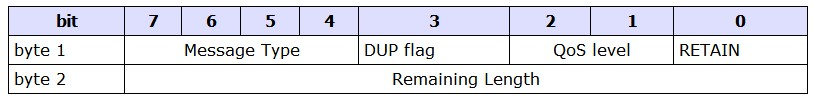

MQTT入门
Table of Contents
1 MQTT协议概览
1.1 关键词解释
- MQTT
MQTT遥测传输(MQ Telemetry Transport，MQTT)是一个轻量级的基于代理(服务器)的发布/订阅式消息传输协议， 专门针对低带宽和不稳定网络环境的物联网应用设计。 一个中心：代理服务器为中心 两个基本点：发布消息和订阅消息（Pub/Sub）
- QoS
QoS（Quality of Service）消息的服务质量，是网络的一种安全机制， 是用来解决网络延迟和阻塞 等问题的一种技术。 QoS Level(服务质量级别)，三种模式 0: 至多一次(<=1)：消息可能丢失。比如环境传感器数据1次/分，丢失一次也无所谓，下条很快又来了 1: 至少一次(>=1)： 无论如何都要确保消息的到达，消息可能重复发送 2: 只有一次(=1)： 无论如何都要确保消息到达有且只能有一次。比如：计费系统，重复或者丢失都是错误的。
- Pub
和发布消息相关
- Sub
和订阅消息相关
- Topic
发布/订阅总有个主题，即主题名
- Payload
有效载荷,消息体
1.2 MQTT协议主要特性
- 使用发布消息/订阅消息模式，提供了一个发布者可以有多个订阅者的一对多的模式
- 消息体（payload）字符串采用utf-8编码
- 传输开销小（数据包格式小），降低了网络流量
- Qos的支持，传输的可靠性可以保证
2 mqtt协议详解
2.1 Topic(主题)
- 作用
Topic(主题)就是Puber(发布者)和Suber(订阅者)之间的桥梁，Suber(订阅者)订阅了什么样的主题， 一旦Puber(发布者)发布了该主题的相关消息，MQTT服务器就会向匹配到改主题的Suber(订阅者)推送消息。
- 路由规则
1 精确主题 (puber,suber) music/香港/男/周杰论 2 一级正则匹配主题+(只能针对suber) music/香港/男/+ ==> music/香港/男/周杰伦 music/香港/男/刘德华 ... 3 多级正则匹配主题#(只能针对suber) music/香港/# ==> music/香港/男/周杰伦 music/香港/女 ...
实例演示
# 启动192.168.161.128服务器的mqtt服务 注意如果集群都要起来 cd ~/local ./bin/emqttd start #192.168.161.129客户端发起订阅了music/香港/男/+这个主题的消息 mosquitto_sub -h 192.168.161.128 -t 'music/香港/男/+' -q 1 #192.168.161.129客户端发布了music/香港/男/周杰伦这个主题的消息 mosquitto_pub -h 192.168.161.128 -t 'music/香港/男/周杰伦' -m "龙卷风" -q 1 // 提及下q非端到端的 // 上的订阅者订阅的主题和该发布者发布的主题就匹配 mosquitto_pub -h 192.168.161.128 -t music/香港/男/周杰伦/a -m "龙卷风" -q 1
2.2 协议格式
MQTT命令消息一般组成结构： 固定头部(fixed header) + [可变头部](variable header) + [ 有效载荷](Payload) 固定头部：一定有 可变头部和有效载荷：可能没有，只有某些特定的类型消息才有 有效载荷：也称为消息体
2.3 固定头部

Byte 1：
包含消息类型和标志字段
Byte 2：
包含剩余长度字段（至少1个字节，最多4个字节），以大端模式存储的（高字节->内存低地址）
字节范围[ 2 - 5 字节]
- MessageType ( byte 1，bits 7-4 ）
14种消息类型
占4 bit，0和15为保留数值
0 => // 保留字
1 => "CONNECT" // 客户端请求连接服务器
2 => "CONNACK" // 连接确认
3 => "PUBLISH" // 发布消息
4 => "PUBACK" // 发布确认
5 => "PUBREC" // 发布接收 QoS2消息回执
6 => "PUBREL" // 发布释放 QoS2消息释放
7 => "PUBCOMP" // 发布完成 QoS2消息完成
8 => "SUBSCRIBE" // 客户端订阅请求
9 => "SUBACK" // 订阅确认
10 => "UNSUBSCRIBE" // 客户端取消订阅请求
11 => "UNSUBACK" // 取消订阅确认
12 => "PINGREQ" // PING请求
13 => "PINGRESP" // PING响应
14 => "DISCONNECT" // 客户端断开连接
15 => // 保留字
2.4 可变头部
2.5 有效负载
- CONNECT
- SUBSCRIBE
- SUBACK
- PUBLISH
3 emqttd集群
- 集群环境搭建
1 下载emqttd-ubuntu16.04-v2.0.4.zip
2 解压emqttd-ubuntu16.04-v2.0.4.zip到目标目录中去
3 vim etc/emq.conf
node.name = emqttd@hostname //hostname当前主机的主机名或者IP
// hostname IOTA-001中有中杠-可能有问题,用IP
4 各个节点的emqtt服务控制
# 启动emqttd
./bin/emqttd start
# 停止emqttd
./bin/emqttd stop
# 查看emqttd
./bin/emqttd_ctl status
# 控制台调试模式启动（查看日志）
./bin/emqttd console
5 web管理控制平台
http://192.168.161.128:18083/
user: admin
password: public:
6 各个节点加入集群，node1上执行
./bin/emqttd_ctl cluster join emqttd@192.168.161.129
./bin/emqttd_ctl cluster join emqttd@192.168.161.130
...
订阅主题集群图
topic1 topic1,topic3
--------- ---------
| Node1 | --------| Node2 |
--------- ---------
| \ / |
| \ / |
| / \ |
| / \ |
--------- ---------
| Node3 | --------| Node4 |
--------- ---------
topic2 topic3
EMQ消息服务器同一集群的所有节点，都会复制一份订阅主题(Topic) -> 节点(Node)映射的路由表
topic1 -> node1, node2
topic2 -> node3
topic3 -> node2, node4
集群中无论在向哪台机器pub(发布)一个主题内容，只要该主题在其他集群中任何一台机器中被订阅了
都是可以收到。
集群实例 t/x -> node1 mosquitto_sub -h 192.168.161.128 -t t/x t/y -> node2 mosquitto_sub -h 192.168.161.129 -t t/y node2 pub->t/x mosquitto_pub -h 192.168.161.129 -t t/x -m "mq129" node1 pub->t/y mosquitto_pub -h 192.168.161.128 -t t/y -m "mq128" # '$local/t/x' ：local只接受本地的mq所pub的消息 mosquitto_sub -h 192.168.161.128 -t '$local/t/x' mosquitto_pub -h 192.168.161.129 -t 't/x' -m "mq129" // 收不到的 mosquitto_pub -h 192.168.161.128 -t 't/x' -m "mq128" // 可以收不到的 http://192.168.161.128:18083/ 查看routes规则 http://192.168.161.129:18083/